全文翻译
摘要
扩散模型已实现卓越的生成质量，但仍受限于高成本的迭代采样过程。近期的无训练加速方法通过复用模型输出来加快扩散进程，然而这些方法忽略了去噪趋势，且缺乏针对模型特异性容差的误差控制，导致多步复用时出现轨迹偏移，并加剧生成结果的不一致性。为解决这些问题，本文提出误差感知趋势一致性（Error-aware Trend Consistency, ETC）框架，该框架具备两大核心功能：1. 引入一致性趋势预测器，利用扩散轨迹的平滑连续性，将历史去噪模式映射为稳定的未来方向，并在多个近似步骤中逐步分配这些方向，从而在实现加速的同时避免轨迹偏移；2. 提出模型特异性误差容差搜索机制，通过识别从波动的语义规划阶段到稳定的质量优化阶段的过渡点，推导修正阈值。实验表明，ETC相较于FLUX模型实现了2.65倍的加速，而生成一致性仅出现微小下降（SSIM评分降低0.074）。注：更多样本与源代码可访问网站https://etcdiff.github.io/
1 引言
扩散模型（Sohl-Dickstein 等人，2015；Song 与 Ermon，2019；Ho 等人，2020）已在图像、视频、音频等多个领域展现出卓越的生成能力。然而，其出色的生成性能通常依赖更大规模的模型架构和多步去噪过程，这导致了巨大的计算开销与推理延迟。基于训练的加速方法（Salimans 与 Ho，2022；Luo 等人，2023）通过从多步模型的去噪过程中学习少步模型来实现扩散加速，但这种范式需要大量训练，且原始模型与少步模型的预测分布之间往往存在差异（Stanton 等人，2021），进而削弱模型的泛化能力。
与之相反，无训练方法（Chen 等人；Ye 等人，2024）无需重新训练模型，也不会导致性能下降，其通过利用相邻时间步之间的特征相似性实现加速，主要分为层内特征复用与步间特征复用两类机制。层内复用方法（Ma 等人，2024a；Liu 等人，2025b）通过在每个去噪迭代中复用模型内层特征实现推理加速，但需要针对特定架构进行设计；而步间复用方法（Ye 等人，2024；Liu 等人，2025a）通过评估模型输出的稳健性来决定多步复用策略，减少模型推理总次数，相比层内复用方法实现了更具泛化性的加速。然而，步间复用方法忽略了相邻时间步之间的去噪趋势，导致生成结果不一致。尽管近年来有研究（Chen 等人；Liu 等人，2025a）尝试通过模型输出之间的残差进行趋势预测以解决该问题，但短期输出波动往往会偏离长期去噪轨迹，正如图1a所示，这种波动残差的多步使用会进一步加剧趋势不一致性，因此，如何实现具有轨迹一致性的多步近似仍是一个未解决的挑战。
此外，现有方法依赖人工设定的固定阈值评估近似误差，忽略了模型特异性的误差容差（如图1b所示）。这种固定阈值策略无法应对累积误差超出模型修正能力、导致不可逆轨迹偏移的情况，最终造成误差控制不足，生成不一致性加剧。综上，步间特征复用研究虽展现出巨大的加速潜力，但仍面临两大挑战：一是由于无法准确捕捉去噪趋势，多步近似过程中会出现轨迹偏移；二是由于对模型误差容限的探索不足，导致误差控制效果不佳。
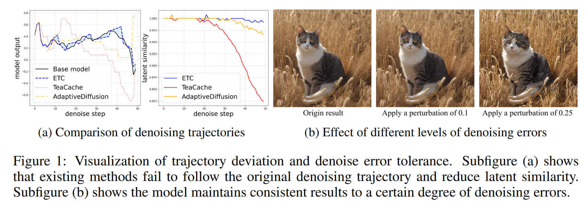 |
|---|
| 图 1：轨迹偏移与去噪误差容差的可视化结果，子图（a）显示，现有方法无法跟随原始去噪轨迹，且会降低 latent 相似度；子图（b）显示，在一定程度的去噪误差范围内，模型仍能保持生成结果的一致性。 |
为解决上述问题，本文提出无训练扩散加速框架ETC（Error-aware Trend Consistency，误差感知趋势一致性），通过轨迹一致性保障与模型特异性误差控制实现步间扩散加速。针对多步轨迹一致性问题，我们致力于从去噪过程固有的全局稳定特性中推导未来方向流：具体而言，通过计算模型输出跨步变化的加权投影，减弱近似误差带来的波动，同时放大长期动态的方向分量；为进一步提升加速效果，我们设计自适应扩展策略，根据投影趋势与周期性模型推理之间的偏差是否处于模型修正能力范围内，动态扩展或收缩近似窗口；此外，我们采用渐进式分配范式，将估计的方向流按比例分配到每个近似步骤中，在实现高效加速的同时避免偏离去噪轨迹。
针对误差控制不足的问题，我们将不同模型的误差容差视为去噪动态过程中涌现的特性。研究发现，去噪过程中的语义规划阶段具有高度动态波动性（Liu 等人，2025b），因此我们通过量化偏差扰动对生成质量的感知影响，推导从波动语义规划阶段到平稳质量优化阶段的关键过渡点，该过渡点可反映模型的误差修正极限。
综上，本文的主要贡献如下：
- 提出一致性趋势预测器，将稳定的去噪趋势映射为未来方向流，并在近似步骤中逐步分配，确保轨迹一致性；
- 提出模型特异性误差容差搜索方法，量化累积误差的影响，定位波动语义规划阶段与平稳质量优化阶段之间的过渡点，以此确定误差容差阈值；
- 实验表明，在图像、视频、音频合成任务中，ETC在生成一致性与速度方面均优于其他最先进的基准方法。
2 相关工作
2.1 扩散模型
扩散模型在生成任务中已取得显著成果。早期扩散模型（Ho 等人，2020；Song 等人，2020a）直接在原始数据模态上执行迭代去噪过程，由于高维运算的存在，该过程产生了较大计算开销。为解决计算效率受限的问题，潜在扩散模型（Rombach 等人，2022；Blattmann 等人，2023）在应用扩散过程前，先将原始模态压缩为低维表示。潜在扩散模型最初基于U-Net（Ronneberger 等人，2015）开发，并展现出优异性能；但基于U-Net的设计面临可扩展性限制，这制约了更大规模模型的训练与实际部署。扩散Transformer（DiT）（Peebles 与 Xie，2023）通过引入Transformer（Vaswani 等人，2017）提升了可扩展性，进而在多个领域实现了最先进的性能（Labs，2024；Wan 等人，2025；Hung 等人，2024）。尽管扩散模型已实现高质量生成，但多步去噪的设计仍减慢了推理过程。
2.2 扩散模型加速
扩散模型加速可分为基于训练的方法与无训练方法两类。基于训练的方法旨在从多步去噪过程中学习少步模型。渐进式蒸馏（Salimans 与 Ho，2022）通过逐步匹配教师模型与学生模型之间的噪声预测结果实现加速；潜在一致性模型（LCM）（Luo 等人，2023）通过施加自一致性约束，实现了单步采样。然而，这些方法需要耗费大量时间进行训练，且由于少步模型与原始模型的预测分布存在差异（Stanton 等人，2021），往往会导致性能下降。
与之相反，近年来的无训练方法借助相邻时间步之间的特征复用实现加速，这类方法可进一步分为层内特征复用与步间特征复用两类。层内复用方法通过复用模型不同层的特征实现扩散加速：DeepCache（Ma 等人，2024b）在U-Net中缓存高层特征，仅在后续步骤中动态更新浅层特征；T-Gate（Liu 等人，2025b）在Transformer交叉注意力输出收敛后对其进行缓存，并在剩余步骤中保持固定。但这类方法需针对特定模型架构设计，泛化能力较弱。
步间复用方法则利用跨时间输出的相似性实现通用加速：AdaptiveDiffusion（Ye 等人，2024）通过三阶微分估计器检测去噪步骤间的冗余，并复用历史模型输出；但该方法忽略了去噪趋势，导致轨迹逐渐偏移。TeaCache（Liu 等人，2025a）通过将相邻步骤间的残差作为近似趋势，最大限度减少轨迹偏移，但短期去噪波动可能会加剧误差累积。SADA（Jiang 等人，2025）通过结合三步历史结果改进趋势估计，但最大四步跳跃的限制使其加速潜力受限。尽管步间复用方法已展现出加速潜力，但在多步近似过程中维持趋势一致性仍是一大挑战。此外，现有步间复用方法依赖人工预定义的阈值判断复用可行性，由于缺乏模型特异性阈值，不同模型的性能表现存在不一致性。
本文聚焦于在步间加速过程中维持去噪轨迹的一致性，通过结合所有历史趋势模式获取更稳定的未来方向估计，并确定模型特异性误差容差，确保近似过程与原始轨迹保持一致，不发生显著偏移。
3 方法
本节将详细介绍所提出的ETC（误差感知趋势一致性）框架的架构组件。如图2所示，该框架整体包含两大核心模块：1）一致性趋势预测器，用于预测未来去噪趋势与近似频率；2）模型特异性误差容差机制，用于确定不同模型的误差阈值。以下小节将详细阐述各模块的设计思路。
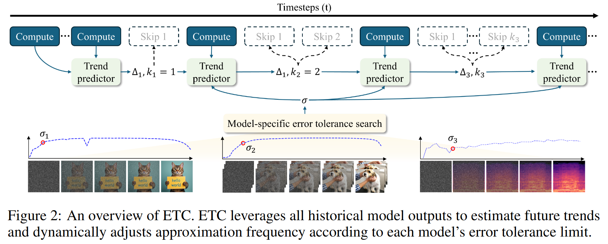 |
|---|
| 图 2：ETC 框架总览，ETC 框架利用所有历史模型输出来估计未来趋势，并根据每个模型的误差容限动态调整近似频率。 |
3.1 预备知识
扩散去噪过程 扩散模型由两个过程构成：通过高斯噪声逐步破坏数据的正向过程，以及通过迭代去噪重建干净数据的反向过程。在推理阶段，仅执行反向过程：从高斯噪声$x_T \sim N(0, I)$出发，以输入信号$c$（例如文本提示）为条件，将$x_T$逐步优化为目标输出$x_0$，其中$T$是预先定义的去噪步数。该优化过程遵循在每个时间步$ t $ 定义的通用更新规则：
其中$ \epsilon_\theta(x_t, t, c) $是一个噪声预测网络，它以$ x_t $、时间步$ t $和附加条件$ c $为输入，用于估计$ x_t $中的噪声成分；而$ f(t) $和$ g(t) $是由采样器（也称为调度器）确定的系数（Ho et al., 2020; Song et al., 2020a）。噪声预测网络$ \epsilon_\theta $和采样器系数$ f(t) $、$ g(t) $都会直接影响生成质量。使用相同的采样器可确保$ f(t) $和$ g(t) $的一致性，因此生成质量主要受噪声预测模型$ \epsilon_\theta $差异的影响。
去噪过程的不同数学定义 去噪过程可通过多种数学框架来定义。随机微分方程（SDE）（Song et al., 2020b）对该过程的定义如下：
其中$ \nabla_{x_t} \log p_t(x_t) $表示对数似然梯度，$ d\bar{w} $表示标准维纳过程。常微分方程（ODE）从公式（2）中移除了$ d\bar{w} $项，提供了一个更稳定的去噪过程，可缓解随机过程中固有的波动问题。流匹配（Lipman et al., 2022）通过学习数据流提出了一种确定性的去噪方法，其数学描述如下：
其中$ v(x_t, t) $表示流函数，该函数控制数据随时间向目标分布的演化。尽管这些方法的表述形式不同，但它们都能确保数据特征随时间平滑演化。因此，我们提出以下假设。
假设1 在去噪过程中，模型输出随时间平滑演化，在不同时间步之间呈现出结构化且可预测的变化。
3.2 一致性趋势预测器
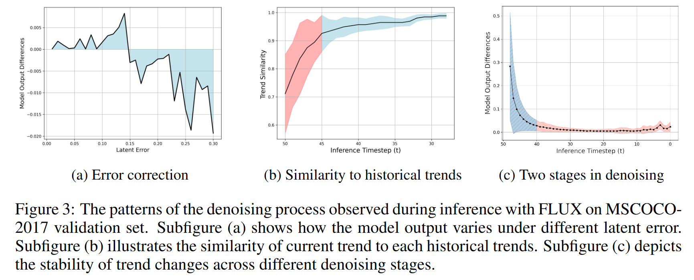 |
|---|
| 图3：在MSCOCO2017验证集上使用FLUX进行推理时观察到的去噪过程模式。子图（a）展示了模型输出在不同潜在误差下的变化情况。子图（b）说明了当前趋势与各历史趋势的相似性。子图（c）描绘了不同去噪阶段趋势变化的稳定性。 |
历史去噪模式投影 基于假设1，可利用近期趋势近似未来去噪轨迹。然而，如图3a所示，当近似趋势在 latent 空间中引入误差时，模型输出会相较于原始结果产生偏差，以修正累积误差；若继续使用该趋势近似未来轨迹，会引发波动并进一步加剧轨迹偏移。因此，我们的目标是通过结合多个历史趋势进行轨迹近似，最大限度减少误差修正型模型输出所引入的波动。
设$d_{t}^{t+1} = \epsilon_{\theta}(x_{t}, t, c) - \epsilon_{\theta}(x_{t+1}, t+1, c)$表示时间步$t$与$t+1$之间的模型输出差异。如图3b所示，近期历史趋势能更精准地反映未来变化，而即使是较早时间步的趋势，其相似度也保持在0.7以上，表明仍能捕捉部分方向信息。因此，我们采用所有历史趋势的加权和进行预测，并为近期趋势分配更高权重。然而，存储所有历史趋势会产生显著的计算开销。为解决这一问题，我们提出一种递归历史趋势加权方法，公式如下：
其中$ \Delta_{t-2} $表示从时间步$ t-2 $开始的估计趋势，$ \alpha $是趋势调整系数，用于在保持与历史去噪轨迹一致性的同时，减少误差修正带来的波动。每轮多步近似中，仅使用模型输出和最终近似值来计算未来的估计趋势。此外，如图3b所示，去噪初始阶段的趋势与未来趋势的相关性存在显著波动（红色区域表示方差）。因此，我们先让模型执行$ n $步去噪，得到更稳定的趋势估计后再启动近似过程。一旦获得估计趋势，可使用以下公式计算近似输出$ \epsilon_\theta’ $：
动态近似窗口扩展策略 为实现更快加速，我们的目标是在保持轨迹一致性的前提下最大化近似频率。如图3a所示，我们通过从潜在空间中减去一个固定值来表示近似误差。在误差修正范围内，模型可产生更大的输出来补偿由误差导致的去噪不足。但如果误差超出该范围，模型输出会开始偏离原始结果。基于这一观察，我们提出近似窗口扩展策略：若前一轮的累积误差低于阈值，下一轮的近似步数增加；否则减少。公式如下：
其中$ k $是近似步数，$ \psi $是阈值。为保持多步近似的一致性，我们将估计趋势平均分配到每一步。这一设计确保最终近似方向与估计趋势对齐，防止估计误差累积导致轨迹偏差。每一步近似输出的计算公式如下：
误差估计 估计误差的详细分析见附录A.1。假设$ \alpha = 0.5 $，累积误差上限的公式如下：
令$ t = T - n - \sum_{l=1}^{r-2}(k_l + 1) $。如图4所示，近似误差取决于近似趋势（$ d $和$ \sigma $的加权组合）与未来趋势的对齐程度。假设$ \sigma = 0 $，误差仅由未来趋势与前一轮趋势的偏差程度决定，这确保去噪轨迹至少与前一步保持一致。因此，只要早期轮次的累积误差可控且$ \sigma $较小，估计趋势就会保持可控，去噪轨迹也能维持一致性。
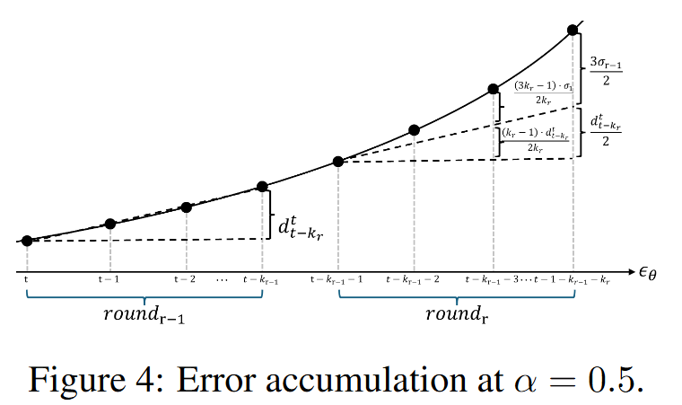 |
|---|
| 图4：$\alpha = 0.5$时的误差累积 |
3.3 模型特定的误差容忍度搜索机制
先前的研究（Liu等人，2025b）表明，交叉注意力图在语义规划阶段会呈现显著波动，而在保真度优化阶段则保持相对稳定。与这些研究结果一致，我们在分析连续两步之间的模型输出差异时，观察到了如图3c所示的类似模式。我们将语义规划阶段视为模型误差容忍范围之外出现的波动。通过确定从该波动阶段到稳定质量提升阶段的过渡点，我们可以近似得到模型的误差容忍极限。具体而言，我们引入每一步去噪的模型输出差异$ d $作为对最终潜在表示的扰动，同时监测解码结果与原始生成结果之间的相似度。使用趋势拐点分析工具（例如ruptures包）来分析相似度趋势，我们能够确定两个阶段之间过渡点处的模型输出差异，这一差异对应着我们所估计的模型误差容忍极限。详细过程见附录A.3。
4 实验
4.1 实验设置
基础模型与对比方法 为验证所提方法的通用有效性，我们将该技术应用于图像、视频、音频生成领域的多种扩散模型，包括用于图像生成的SDXL（Podell等人，2023）和FLUX（Labs，2024）、用于视频生成的Open-Sora 1.2（Zheng等人，2024）和Wan 2.1（Wan等人，2025），以及用于音频生成的TangoFlux（Hung等人，2024）。我们将所提方法与近期主流的先进加速方法进行对比，包括AdaptiveDiffusion（Ye等人，2024）、SADA（Jiang等人，2025）、TeaCache（Liu等人，2025a）和MagCache（Ma等人，2025）。为更公平地评估效率与质量的权衡关系，我们采用TeaCache和MagCache的快速配置进行对比实验。
评估指标与数据集 我们从计算效率和生成质量两个核心维度对加速方法进行评估。在效率评估方面，我们报告浮点运算次数（FLOPs）、推理延迟和加速比；在质量评估方面，我们采用模态特异性指标全面衡量加速后输出与原始输出的保真度。
- 对于图像和视频生成，我们使用LPIPS（Zhang等人，2018）、PSNR和SSIM衡量视觉相似度；此外，图像生成任务采用CLIP评分（Radford等人，2021）评估文本-图像对齐度，视频生成任务则采用VBench（Huang等人，2024）进行多维度视频质量评估。
- 对于音频生成，我们使用FAD（Kilgour等人，2018）、MCD（Kubichek，1993）和分类概率KL散度（Copet等人，2023；Koutini等人，2021）衡量声学保真度，同时采用CLAP评分（Wu等人，2023）评估文本-音频对齐度。
为确保对比公平性，所有实验均使用标准化提示数据集：图像生成任务采用MSCOCO2017（Lin等人，2014）验证集，视频生成任务采用VBench提示集，音频生成任务采用AudioCaps（Kim等人，2019）测试集。
实现细节 所有实验均在单台配备NVIDIA A800 80GB GPU的设备上基于PyTorch框架完成，且所有配置均启用FlashAttention（Dao等人，2022）。为高效确定步长跳过阈值，我们为每种模态采样少量提示：对于图像和音频模型，我们将MSCOCO-2017和AudioCaps的训练提示按长度分为10个区间，每个区间采样1条提示；对于视频模型，我们从VBench的每个评估维度中采样1条提示。阈值结果如表1所示。超参数$n$（预推理步数）在OpenSora模型中设为4，在其他模型中设为6；超参数$\alpha$（趋势调整系数）在所有模型中均设为0.5。
4.2 主要结果
定量对比
表1展示了计算效率与生成质量的定量评估结果。ETC在不同任务和架构下均实现了卓越的加速性能，同时保持较高的视觉质量。
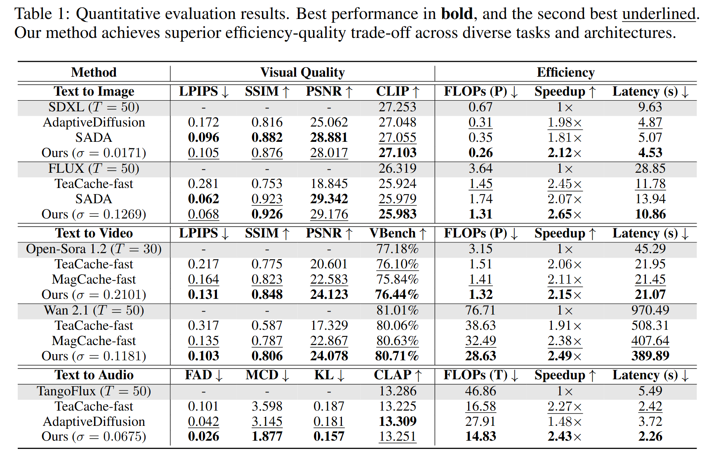 |
|---|
| 表1：定量评估结果。最佳性能用粗体表示，次佳性能用下划线表示。我们的方法在不同任务和架构上都实现了出色的效率 - 质量权衡。 |
- 在Wan 2.1文本-视频基准模型上，我们的方法实现了2.5倍加速，且SSIM（结构相似性）达到0.806，优于MagCache（仅实现2.38倍加速，生成一致性降低5%）。
- 在TangoFlux文本-音频基准模型上，我们的方法实现了2.43倍的最高加速比，且MCD（梅尔倒谱距离）评分比AdaptiveDiff低40%（AdaptiveDiff因优先保证生成质量，仅实现1.48倍加速）。
- 在文本-图像基准模型上，我们的方法在FLUX模型上实现了2.65倍加速，SSIM达0.926；尽管在SDXL模型上的SSIM比SADA低0.6%，但推理速度提升了22%，展现出更优的效率-质量权衡性能。
可视化对比
图5对比了ETC与原始模型及其他基准方法的生成结果。
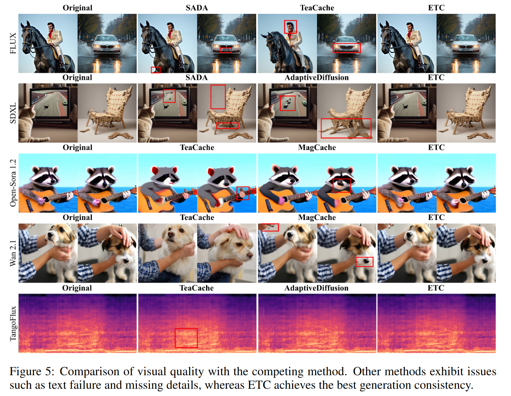 |
|---|
| 图5：与对比方法的视觉质量对比。其他方法存在文本生成错误、细节缺失等问题，而ETC（误差感知趋势一致性）方法则实现了最佳的生成一致性。 |
- 图像生成任务中：TeaCache和AdaptiveDiff存在明显的结构失真（如汽车前脸设计变形、椅子腿部扭曲）；SADA虽能保留整体结构，但存在细节丢失和文本生成错误（如椅子旁多余杂物、车牌从“NX4 5KJ”变为“AX4 5K”）。
- 视频生成任务中：TeaCache存在显著内容偏移（如狗的外观、抚摸动作不一致）；MagCache虽能维持结构对齐，但丢失细粒度细节（如浣熊皮毛纹理、狗嘴周围独特的黄色胡须）。
- 音频生成任务中：尽管任务复杂度相对较低，多数方法能保留与原始结果的相似性，但TeaCache仍引入了噪声失真等伪影（如图中红色框标注部分）。
相比之下，我们的方法在各类任务中均同时保留了全局一致性和细粒度细节，展现出更优异的生成保真度。
4.3 消融实验
统计鲁棒性
为评估不同文本条件下生成性能的稳定性，我们通过箱线图分析了三种生成任务的SSIM和延迟指标分布。如图6所示：
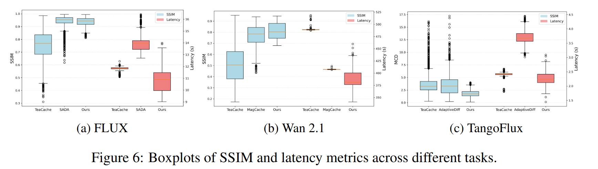 |
|---|
| 图 6：不同任务下结构相似性指数（SSIM）与延迟指标的箱线图。 |
- TeaCache和MagCache的加速性能稳定，不同提示下的延迟分布较窄；但在Wan 2.1模型上，TeaCache的SSIM分布范围极宽（0.1-0.9），MagCache虽略有改善但仍处于0.5-0.9区间。
- 我们的方法延迟方差适中，但SSIM分布显著更集中（0.7-0.9）；SADA和AdaptiveDiff虽表现出类似的自适应特性（延迟方差适中），但两者均存在质量不稳定问题，异常值数量远多于我们的方法。
这些结果表明，ETC有效平衡了加速性能与稳定性，在不同条件下均能实现更一致的生成质量。
误差控制有效性
为研究近似噪声导致的误差累积，我们计算了每个时间步的近似噪声与真实噪声差异，以及对应的 latent 偏差。如图7所示，噪声误差呈现两种典型模式：波动增长和平稳增长。
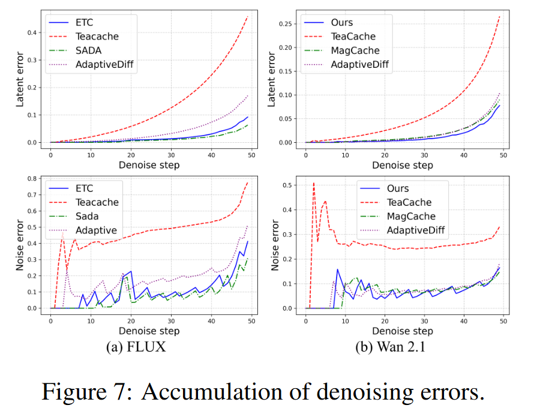 |
|---|
| 图 7：去噪误差的累积情况 |
- TeaCache因采用简单的相邻历史噪声差异进行近似，误差呈平稳增长趋势，在高波动的初始阶段引入显著偏差，并在整个去噪过程中持续传播。
- 我们的方法虽呈波动增长模式，但误差累积速度慢于MagCache和AdaptiveDiff；SADA虽与我们的方法呈现相似的误差累积模式，但需牺牲推理速度以实现更低的累积速率。
相比之下，我们的方法在保持高加速比的同时有效控制了误差累积，表明所提趋势近似策略能在多步近似过程中维持去噪轨迹的一致性。
阈值选择有效性
如表2所示，我们评估了不同扩展阈值设置下方法的加速性能。对不同基础模型进行加速时，生成质量在达到最优阈值前会急剧下降，超过最优阈值后则趋于稳定。这一趋势与我们在阈值搜索中观察到的去噪偏差模式一致，表明所提方法能有效捕捉各模型对偏差的容忍度。此外，在高阈值条件下，我们的方法实现的SSIM高于阈值搜索过程中的结果，说明平滑趋势估计有助于抵消高阈值下的去噪不稳定性。
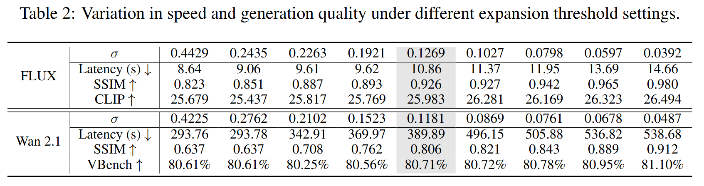 |
|---|
| 表2：不同扩展阈值设置下速度和生成质量的变化情况。 |
固定误差阈值实验
表3展示了将OpenSora模型搜索得到的误差阈值作为固定阈值应用于不同模型时的生成结果。由于与最优阈值的差距不同，不同模型呈现出不同程度的质量下降。这表明采用模型特异性误差阈值能确保ETC在不同模型上均保持稳定性能。此外，如表2和图8所示，当采用更大误差阈值以实现3倍以上加速时，我们的方法仍能维持合理的相似度（SSIM>0.65），这表明即使在误差控制较弱的情况下，一致的趋势估计仍能保留生成结果的整体结构完整性。
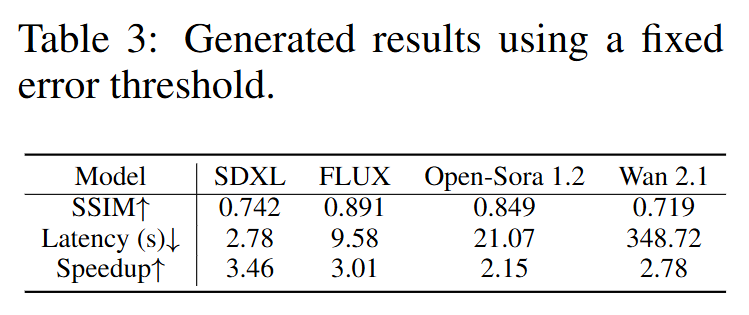 |
|---|
| 表3：固定阈值生成的结果 |
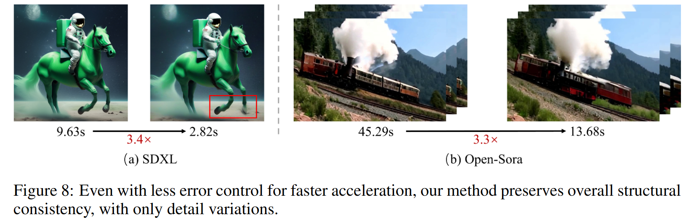 |
|---|
| 图8：即便为实现更快加速而减少了误差控制，我们的方法仍能保持整体结构的一致性，仅存在细节上的差异。 |
超参数$n$和$\alpha$的敏感性
表4展示了不同$n$（预推理步数）和$\alpha$（趋势调整系数）设置下的SSIM变化。
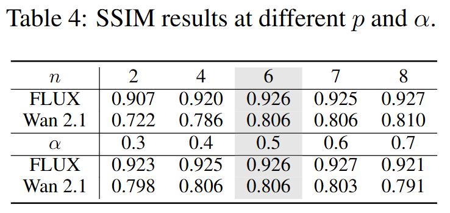 |
|---|
| 表4：不同$n$（预推理步数）和$\alpha$（趋势调整系数）设置下的SSIM变化 |
- 对于超参数$n$：在去噪早期高波动阶段启动扩展近似会导致生成一致性下降；增大$n$虽能获得更稳定的初始趋势估计，但SSIM提升幅度逐渐减小。这表明允许少量初始去噪步骤有助于建立更稳定的去噪轨迹估计。
- 对于超参数$\alpha$：不同$\alpha$值下的SSIM变化范围较窄，方法对$\alpha$的敏感性较低。这种鲁棒性表明，所提趋势平滑设计能有效维持加速去噪轨迹与原始采样路径的对齐，避免偏离预期生成过程。
5 结论与讨论
在本研究中，我们提出了ETC（误差感知趋势一致性）——一种无训练扩散加速框架。该框架将所有历史模型输出映射为一致的未来趋势，并在模型容差范围内将这些趋势分配到多个步骤中。实验结果表明，ETC在实现显著加速的同时，能够保持生成保真度。然而，本研究存在一个关键局限性：在确定每轮迭代的最大近似步数时，我们目前仅采用基于前一轮结果的保守调整策略，这在一定程度上限制了可实现的加速效果。未来研究的一个重要方向是，通过评估累积误差与模型特异性容差边界之间的差距，来估计最大可行近似步数，从而进一步提升加速性能。
附录A
A.1 一致性趋势预测器引发的误差估计
A.1.1 模型推理K步的通用公式
假设我们推理一次，从潜在表示$ x_t $中得到模型输出$ \epsilon_\theta(x_t, t, c) $，去噪公式如下：
类似地，在第二次去噪并代入公式(9)后，我们可得到以下公式：
以此类推，在使用模型输出采样$ k $次后，我们可得到以下结果：
A.1.2 首次使用估计趋势导致的累积误差
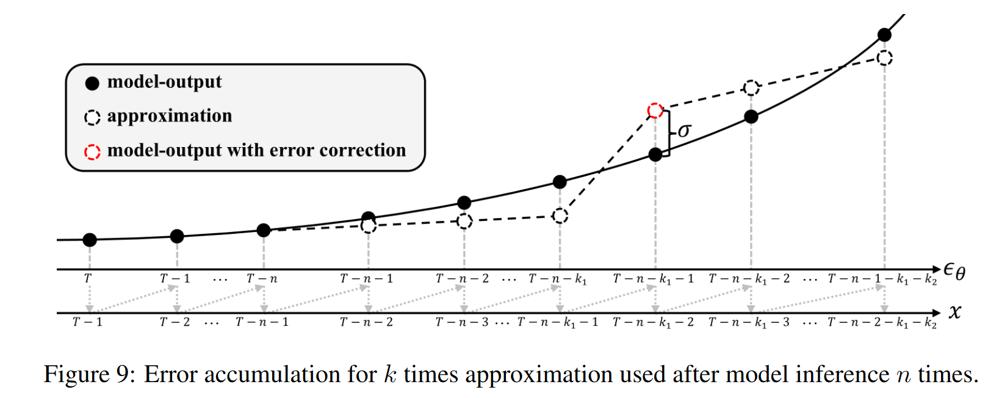 |
|---|
| 图 9：模型推理 n 次后使用 k 次近似的误差累积情况。 |
假设 如图9所示，我们做出以下假设：
(1) 去噪过程的时间步从$ T $递减至0；
(2) 令$ d_{t_2}^{t_1} = \epsilon_\theta(x_{t_2}, t_2, c) - \epsilon_\theta(x_{t_1}, t_1, c) $；
(3) 模型推理$ n $次后，利用估计趋势进行去噪。
初始近似趋势 当模型先执行两次推理，再使用输出计算估计趋势时，公式如下：
第二次估计趋势公式 如下：
第三次估计趋势公式 如下：
以此类推，我们可得到第$ n $次迭代的估计趋势如下：
累积误差 为提高可读性，我们令$ \epsilon_\theta(x_t) = \epsilon_\theta(x_t, t, c) $。从$ x_{T-n-1} $开始，基于估计趋势和公式(11)，$ x_{T-n-1-k_1} $的公式如下：
累积误差如下：
由于$ f \leq 1 $且$ g \leq 1 $，我们可得以下公式：
将公式(15)代入公式(18)，我们得到误差的上界如下：
A.1.3 下一轮的误差累积
假设 如图9所示，我们做出以下假设：
(1) 为修正累积误差，模型输出$ \epsilon_\theta^*(x_{T-n-k_1-1}) = \epsilon_\theta(x_{T-n-k_1-1}) + \sigma_1 $。经过一次模型推理后，得到的$ x_{T-n-k_1-2} $无误差。
更新后的近似趋势 使用一次模型推理修正累积误差后，我们更新估计趋势的公式如下：
累积误差 为提高可读性，我们省略$ f $和$ g $的参数。从$ x_{T-n-2-k_1} $开始，基于估计趋势和公式(11)，$ x_{T-n-2-k_1-k_2} $的公式为：
累积误差如下：
由于$ f \leq 1 $且$ g \leq 1 $，我们可得以下公式：
将公式(20)代入公式(23)，我们得到误差的上界如下：
A.1.4 全过程的误差累积
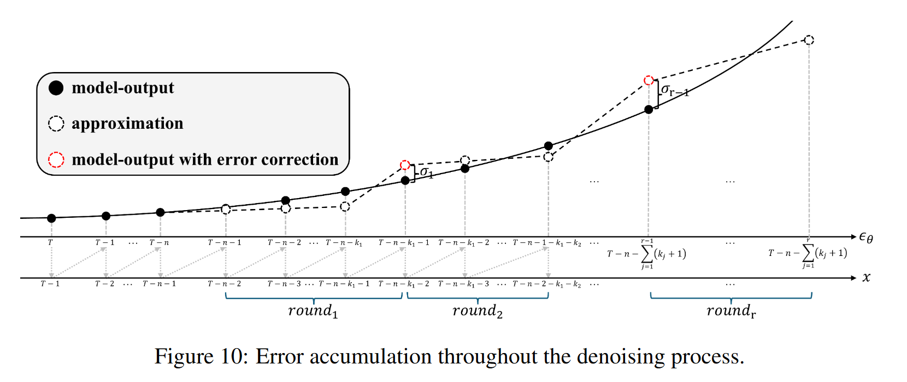 |
|---|
| 图10：整个去噪过程中的误差累积情况。 |
假设条件
如图10所示，我们做出如下假设：
（1）共进行$r$轮近似，每轮近似次数为$k_i$；对于每一轮，通过模型推理得到的输出与无误差情况下的模型输出之差为$\sigma_{i-1}$（其中$i=1,\dots,r$）。
每轮的近似趋势
以此类推，第$r$轮使用的估计趋势可表示为：
累积误差
以此类推，第$r$轮的累积误差可表示为：
将公式（15）代入公式（26），可得到误差的上界：
由此可见，我们在每一步都通过历史趋势与误差修正的加权组合来近似未来趋势。
A.2 一致性趋势预测器的算法
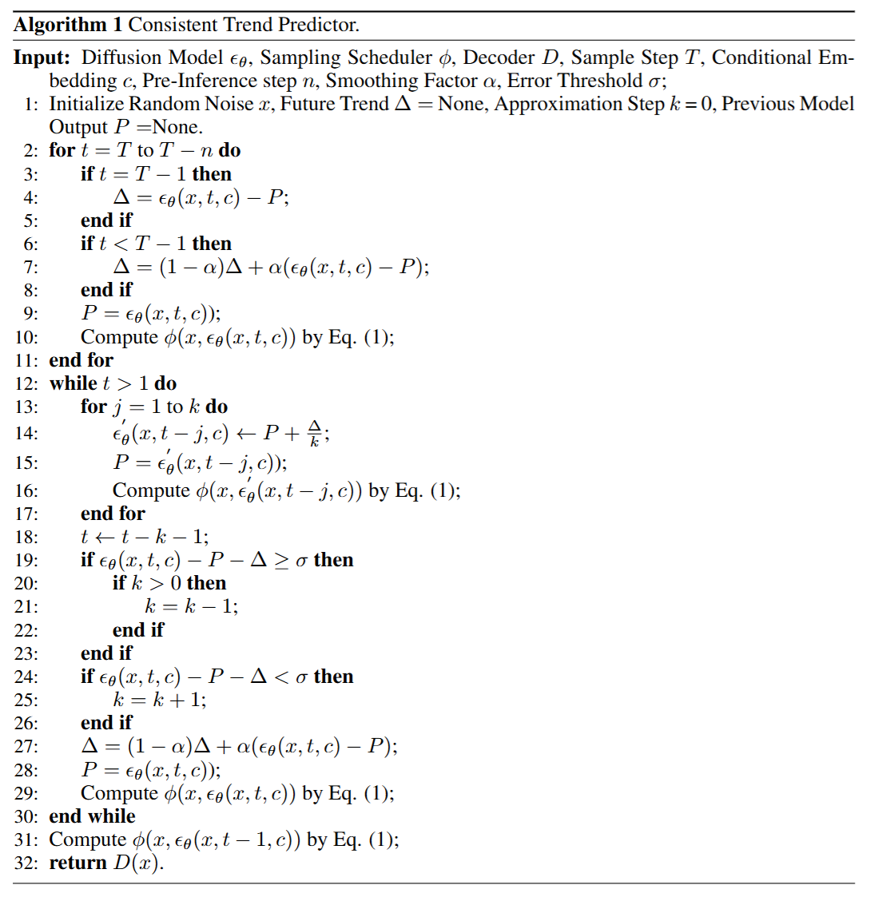
A.3 模型特异性误差容差搜索机制的算法
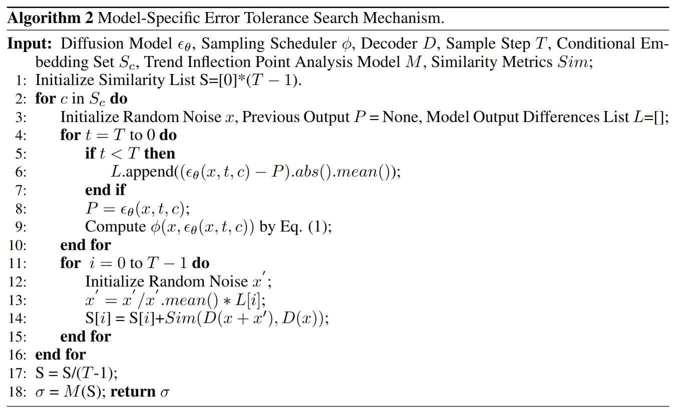
Review
Summary
本文提出了一种名为 Error-aware Trend Consistency (ETC) 的扩散模型加速框架，在无需训练的情况下加速扩散采样并保持生成保真度。ETC包含了一致性趋势预测器和模型特定误差容忍度搜索机制，其中一致性趋势预测器通过历史模型输出估计稳定的未来去噪方向，而模型特定误差容忍度搜索机制基于去噪动态确定可安全重用的阈值。实验显示，ETC 在图像、视频和音频任务上实现了最高2.65×的加速，且质量下降可忽略。
Strengths
实验较为全面，内容涵盖了主流的定量对比结果和定性的可视化结果，并且通过消融实验验证了误差控制有效性及统计鲁棒性和关键参数$n,\alpha$的作用。
Weaknesses
未与其他无训练加速方法进行比较，例如基于层内特征复用的方法、基于求解器的方法
对于模型特定的误差容忍度的搜索的描述较为模糊，仅通过算法2来描述，其中关于Trend Inflection Point Analysis Model等模型未给出具体的工作流程。
Questions
存储所有历史趋势与本文提出的递归历史趋势加权方法相比，两者之间的计算开销差距有多大？
本文的ETC是DDIM兼容的吗？可否与其他高阶采样器例如iPNDM、DPM-Solver++等兼容？